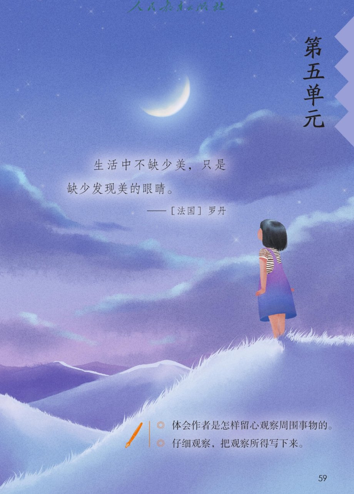
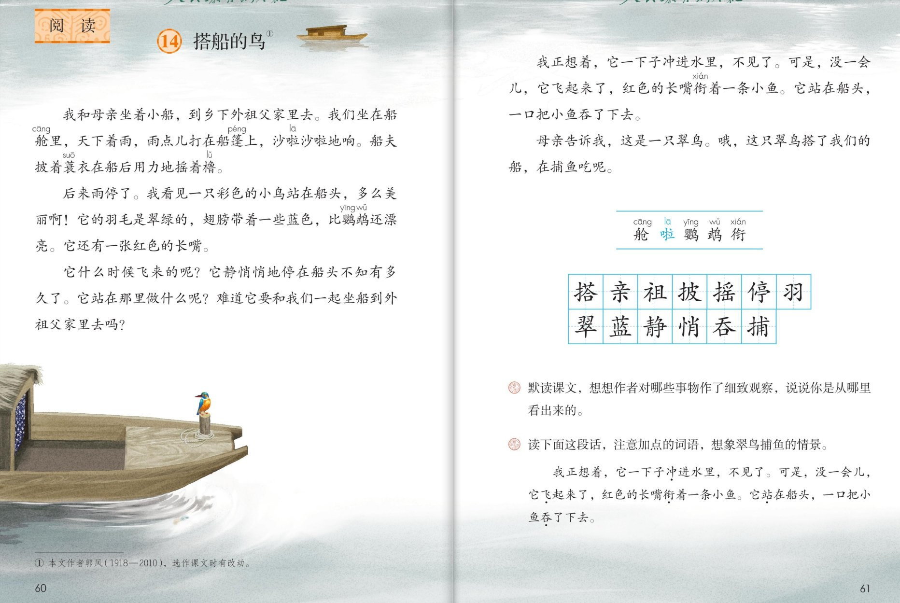

×
🔊 手机听不到声音怎么办？
① 先把手机
媒体音量调大 ，确认没开静音、没连蓝牙耳机；在微信里打开的，点右上角「⋯ → 用浏览器打开」。
② 还是没声音？到应用商店免费下载
Microsoft Edge 浏览器 （它自带朗读发声），用它打开本页面就能出声。
③ 换了 Edge 仍然没声音，说明这部手机的
硬件/系统不支持 网页朗读（多为老旧机型）；近几年买的新手机一般都能正常播放。
→ 打开声音自检
🐦 第 14 课《搭船的鸟》· 有声图文带读
统编版语文 · 第五单元·阅读 · 课本 P59~61 · 作者：郭风 · 素养升级版（对标 2022 课标第二学段）
课文 5 个自然段
素养目标 4
会认字 5
会写字 13
听写词 12
观察探究 6 卡
深入理解 8 题
本课本领 留心观察·按顺序说
🎧 这样学（可随时点任意一句、一个字、一个词单独听）： ① 听读课文 ——一句一句读，读到哪一句哪一句发光；边读边想：作者观察了什么、怎么观察的。② 学字词 ——5 个会认字、13 个会写字，点一个读一个。③ 词语·听写 ——听写 12 个课文词（读两遍→你写→报答案→听示范句），再听 4 组近义词辨析。④ 深入理解 ——8 道题（认知 / 理解 / 运用 / 拓展），先想后看。⑤ 分角色朗读 ——旁白、小观察员、捕鱼解说员、母亲，读出观察与发现的快乐。🌟 本单元任务：体会作者是怎样留心观察周围事物的；仔细观察，把观察所得写下来！
📌 本单元语文要素 ——单元导语（P59 照录）：生活中不缺少美，只是缺少发现美的眼睛。——[法国] 罗丹 ；要点：体会作者是怎样留心观察周围事物的 ；仔细观察，把观察所得写下来 。本课是观察单元的第一篇课文。
🀄 文化自信
🀄 文化自信
读中国作家郭风的观察小品，体会汉语把雨声写成沙啦沙啦的声音之美。
🗣 语言运用
🗣 语言运用
认识 5 个生字，会写 13 个字；积累沙啦沙啦、静悄悄等拟声词，用上冲、飞、衔、站、吞说清捕鱼过程。
💡 思维能力
💡 思维能力
理清作者观察的顺序：先整体后部分、连续动作看捕鱼——体会什么是留心观察。
🎨 审美创造
🎨 审美创造
读出观察与发现的快乐；学着作者的样子观察身边的小动物，把观察所得说清楚、写下来。
点段前的 ①②③ 听整段
🔁 跟读模式：关
👁 隐藏注音（自测用）
字卡上的拼音标的是本课要认的字，读音来自课本生字表
🎤 朗读要求（老师标准） 不添字、不漏字 ；沙啦沙啦 这样的拟声词读得轻快，学一学雨声；一处一处读清楚 ，多么美丽啊读出赞叹 ；又快又连贯 ，像放小电影。
🤫 默读小提示（带着观察任务默读） 听读 ——点句子听老师读；第二步 默读 ——不出声、不指读，一边读一边想：作者对哪些事物作了细致观察？从哪里看出来？ （正是课后题①）；第三步 朗读 ——读出观察与发现的快乐 。
①
我和母亲坐着小船，到乡下外祖父家里去。
我们坐在船舱里，天下着雨，雨点儿打在船篷上，沙啦沙啦地响。
船夫披着蓑衣在船后用力地摇着橹。
📌 这一段讲：雨中，我和母亲坐小船去乡下外祖父家，雨点打篷沙啦响，船夫披蓑衣摇橹。
②
后来雨停了。
我看见一只彩色的小鸟站在船头，多么美丽啊！
它的羽毛是翠绿的，翅膀带着一些蓝色，比鹦鹉还漂亮。
它还有一张红色的长嘴。
📌 这一段讲：雨停了，一只彩色的小鸟站在船头：羽毛翠绿、翅膀带蓝、红色的长嘴，比鹦鹉还漂亮。
③
它什么时候飞来的呢？
它静悄悄地停在船头不知有多久了。
它站在那里做什么呢？
难道它要和我们一起坐船到外祖父家里去吗？
📌 这一段讲：我好奇：它什么时候飞来的？站在那里做什么？难道要和我们一起坐船去外祖父家吗？
④
我正想着，它一下子冲进水里，不见了。
可是，没一会儿，它飞起来了，红色的长嘴衔着一条小鱼。
它站在船头，一口把小鱼吞了下去。
📌 这一段讲：我正想着，它一下子冲进水里，飞起来时长嘴衔着一条小鱼，站在船头一口吞了下去。
⑤
母亲告诉我，这是一只翠鸟。
哦，这只翠鸟搭了我们的船，在捕鱼吃呢。
📌 这一段讲：母亲告诉我这是翠鸟——它搭了我们的船，在捕鱼吃呢。
🤔 想一想（点我可跳过）
双页宽图自动占整行

第 59 页 · 第五单元导语

第 60~61 页 · 课文 · 认字 · 写字 · 课后练习
📖 人教版《语文》三年级上册 · 课本第 59~61 页 · 图片仅供个人学习，版权归人民教育出版社所有
📚 注释① 本文作者郭风（1918—2010） ，选作课文时有改动。观察小品 ：一次寻常的搭船旅行，因为留心观察，变成了一篇有声音、有颜色、有动作的美文。
点一个字，听读音、词语和在课文里的句子
结构、部首、笔画与书写提示为通用规范，供参考，以教材和老师的指导为准
搭dā
搭船
左右 · 扌 · 12画
提手旁窄长，右边上面草字头写扁，下面合字上收下展。
亲qīn
母亲
上下 · 立 · 9画
立字头横画长，中间竖钩居中，左右两点要对称。
祖zǔ
祖父
左右 · 礻 · 9画
示字旁只有一点，别写成衣字旁；且字横画间隔均匀。
披pī
披着
左右 · 扌 · 8画
提手旁窄，右边皮字撇要短，竖弯钩舒展有力。
摇yáo
摇着橹
左右 · 扌 · 13画
提手旁窄长，右边上面的爪字头别丢点，下面写紧凑。
停tíng
停在船头
左右 · 亻 · 11画
单人旁竖画要直，右边亭字上点居中，竖钩挺直。
羽yǔ
羽毛
左右 · 羽 · 6画
两个习字并排，左小右大，右边钩稍大，里面各有一点。
翠cuì
翠鸟
上下 · 羽 · 14画
上面的羽字头写扁、不带钩，下面横画均匀，竖画居中。
蓝lán
蓝天
上下 · 艹 · 13画
草字头写扁，中间部分紧凑，皿字底要宽，稳稳托住上面。
静jìng
静悄悄
左右 · 青 · 14画
左边青字的竖变撇，右边争字横钩有力，右边略高。
悄qiāo
静悄悄
左右 · 忄 · 10画
竖心旁先写两点再写竖，竖要长；右边肖字上竖短下月长。
吞tūn
吞了下去
上下 · 口 · 7画
上面天字的捺改成点，下面口字写扁，托住上面。
捕bǔ
捕鱼
左右 · 扌 · 10画
提手旁窄，右边甫字横画均匀，中间竖画对正穿过。
点一行，听读这一组词语
羽 羽毛 翠羽 羽翼
悄 静悄悄 悄悄地 悄声
吞 吞下 吞并 狼吞虎咽
捕 捕鱼 捕捉 捕获
读两遍 → 你在纸上写 → 报答案 → 听示范句
准备听写 · 共 12 个词
○ ○ ○
点下面的「开始听写」，听到一个词就写一个词。
▶ 开始听写
🔁 再读一遍
👁 看答案
点词听读，点句子听示范句，再自己说一句
1 搭船 课文词
示范句：这只翠鸟搭了我们的船。
✏️ 我也能说：谁搭了我们的船。
2 母亲 课文词
示范句：我和母亲坐着小船，到乡下外祖父家里去。
✏️ 我也能说：谁和我一起去。
3 外祖父 课文词
示范句：我和母亲坐着小船，到乡下外祖父家里去。
✏️ 我也能说：到谁家里去。
4 披着 课文词
示范句：船夫披着蓑衣在船后用力地摇着橹。
✏️ 我也能说：船夫披着什么。
5 摇着橹 课文词
示范句：船夫披着蓑衣在船后用力地摇着橹。
✏️ 我也能说：船夫在做什么。
6 停下 课文词
示范句：它静悄悄地停在船头。
✏️ 我也能说：小鸟停在哪里。
7 羽毛 课文词
示范句：它的羽毛是翠绿的。
✏️ 我也能说：小鸟的羽毛是什么颜色。
8 翠鸟 课文词
示范句：母亲告诉我，这是一只翠鸟。
✏️ 我也能说：这是一只什么鸟。
9 蓝天 课文词
示范句：雨停了，小鸟飞在蓝蓝的天空下。
✏️ 我也能说：天空是什么颜色。
10 静悄悄 课文词
示范句：它静悄悄地停在船头不知有多久了。
✏️ 我也能说：小鸟停得怎么样。
11 吞下 课文词
示范句：它站在船头，一口把小鱼吞了下去。
✏️ 我也能说：小鸟把什么吞了下去。
12 捕鱼 课文词
示范句：这只翠鸟搭了我们的船，在捕鱼吃呢。
✏️ 我也能说：翠鸟在做什么。
相同点 / 不一样在哪 / 各造一句
美丽 — 漂亮
相同：都表示好看。
不一样：美丽 偏重好看、令人喜爱，多形容景色和动物；漂亮 偏重好看、出众，口语里更常用。
美丽：我看见一只彩色的小鸟站在船头，多么美丽啊。
静悄悄 — 悄悄
相同：都表示没有声音。
不一样：静悄悄 形容非常安静、没有一点声响；悄悄 偏重动作轻、不惊动人。
静悄悄：它静悄悄地停在船头不知有多久了。
用力 — 使劲
相同：都表示使出力量。
不一样：用力 偏重把力气用在动作上；使劲 偏重鼓足了劲去做。
用力：船夫披着蓑衣在船后用力地摇着橹。
观察 — 观看
相同：都表示用眼睛看。
不一样：观察 是有目的、仔细地看，还要动脑想；观看 是一般地看、浏览地看。
观察：作者对彩色的小鸟作了细致的观察。
拟声词 沙啦沙啦 哗啦哗啦 滴滴答答
颜色的词 翠绿 蓝色 红色 彩色
ABB 式 静悄悄 亮晶晶 绿油油
连续动作 冲进水里 飞起来 衔着 站在船头 吞下去
点一张卡，听这条线索
单元导语引用罗丹的话：生活中不缺少美，只是缺少发现美的眼睛。 这篇课文就是一双发现美的眼睛——六张卡片，看作者怎么观察。
👀 观察藏在旅途中
坐船去外祖父家的路上，作者没有闲着：雨点打篷的声音、船夫摇橹的样子，都被他记下来了——生活中处处可以观察。
🎨 从整体到部分
先看整体的彩色小鸟，再看羽毛是翠绿的、翅膀带蓝色、还有红色的长嘴——按顺序一处一处看，才看得清。
🎬 连续动作拍电影
冲进水里、飞起来、衔着小鱼、站在船头、一口吞下去——五个动词连起来，就像放了一场翠鸟捕鱼的小电影。
❓ 一连串的问号
什么时候飞来的？站在那里做什么？难道要和我们一起去吗？——观察不光用眼睛，还要动脑筋想。
🗣 母亲告诉我
我猜不出来，母亲告诉我：这是一只翠鸟——请教别人，也是认识事物的好办法。
✨ 题目的巧思
课题叫搭船的鸟，不说翠鸟捕鱼——在小作者眼里，它是同船的伙伴，字里行间都是喜爱的味道。
标「答案不唯一」的题，说得有道理都对
认知 作者这次搭船要到哪里去？和谁一起去？看解析
🤔 想一想
解析：
我和母亲坐着小船，到乡下外祖父家里去。
🌈 答案不唯一，说得有道理都对
认知 这只彩色的小鸟长什么样子？看解析
🤔 想一想
解析：
它站在船头，羽毛是翠绿的，翅膀带着一些蓝色，比鹦鹉还漂亮，还有一张红色的长嘴。
🌈 答案不唯一，说得有道理都对
理解 默读课文，想想作者对哪些事物作了细致观察，说说你是从哪里看出来的。（课后题①照录）看解析
🤔 想一想
解析：
示例：①雨中的景象——雨点儿打在船篷上沙啦沙啦地响，是耳朵听到的；船夫披着蓑衣用力摇橹，是眼睛看到的；②彩色的小鸟——从羽毛、翅膀到长嘴，一处一处细细地看；③翠鸟捕鱼——冲、飞、衔、站、吞，每个动作都看在眼里。🌈 答案不唯一，能说出观察的依据都对。
🌈 答案不唯一，说得有道理都对
理解 它什么时候飞来的呢？它站在那里做什么呢？——这一连串的问号说明什么？看解析
🤔 想一想
解析：
说明小作者一直在观察、在思考：观察不只是用眼睛看，还要在心里问一问、想一想——这正是留心观察的样子。
🌈 答案不唯一，说得有道理都对
理解 读下面这段话，注意加点的词语，想象翠鸟捕鱼的情景。（课后题②照录）看解析
🤔 想一想
解析：
我正想着，它一下子冲进水里，不见了。可是，没一会儿，它飞起来了，红色的长嘴衔着一条小鱼。它站在船头，一口把小鱼吞了下去。——加点词：冲、飞、衔、站、吞 ，五个动词连起来又快又连贯，翠鸟捕鱼一气呵成，像看了一场小电影。
🌈 答案不唯一，说得有道理都对
运用 如果请你把翠鸟捕鱼这段读出来，你会怎么读？看解析
🤔 想一想
解析：
示范：一下子冲进水里要读得又快又干脆；衔着一条小鱼读出小小的得意；一口把小鱼吞了下去读得干净利落——节奏快，像捕鱼一样麻利。
🌈 答案不唯一，说得有道理都对
运用 学着作者的样子，观察身边的一种小鸟或小动物，按顺序说一说它的样子。看解析
🤔 想一想
解析：
提示：先说整体（比如一只彩色的小鸟站在那里），再按顺序说部分（羽毛什么颜色、翅膀什么样、嘴巴什么样），最后说说它在做什么。🌈 答案不唯一。
🌈 答案不唯一，说得有道理都对
拓展 课文的题目叫搭船的鸟，为什么不叫翠鸟？看解析
🤔 想一想
解析：
搭船是说小鸟和我们同乘一条船——在小作者眼里，它不是一只陌生的鸟，而是同行的伙伴；题目里藏着喜爱，也告诉我们：这一次观察，来自生活途中的一次相遇。🌈 答案不唯一。
🌈 答案不唯一，说得有道理都对
💬 想象支架：先 雨中搭船 → 再 彩色小鸟站船头 → 接着 一连串的问号 → 然后 冲水捕鱼一气呵成 → 最后 母亲告诉我是翠鸟。轮到你了：把这次观察按顺序讲给同桌听。
点一个角色，听他（她）的台词
🎭 旁白
我和母亲坐着小船，到乡下外祖父家里去。我们坐在船舱里，天下着雨，雨点儿打在船篷上，沙啦沙啦地响。 / 后来雨停了。
💬 要读出观察与发现的快乐 ：赞叹小鸟美丽，捕鱼段读得快而连贯
🎭 我·小观察员
我看见一只彩色的小鸟站在船头，多么美丽啊！它的羽毛是翠绿的，翅膀带着一些蓝色，比鹦鹉还漂亮。它还有一张红色的长嘴。 / 它什么时候飞来的呢？它站在那里做什么呢？难道它要和我们一起坐船到外祖父家里去吗？
💬 要读出观察与发现的快乐 ：赞叹小鸟美丽，捕鱼段读得快而连贯
🎭 翠鸟捕鱼解说员
我正想着，它一下子冲进水里，不见了。可是，没一会儿，它飞起来了，红色的长嘴衔着一条小鱼。 / 它站在船头，一口把小鱼吞了下去。
💬 要读出观察与发现的快乐 ：赞叹小鸟美丽，捕鱼段读得快而连贯
🎭 母亲
母亲告诉我，这是一只翠鸟。
💬 要读出观察与发现的快乐 ：赞叹小鸟美丽，捕鱼段读得快而连贯
🎭 朗读员·观察发现
哦，这只翠鸟搭了我们的船，在捕鱼吃呢。 / 观察就是：用眼睛看，用耳朵听，用心想，再按顺序把看到的写下来。
💬 要读出观察与发现的快乐 ：赞叹小鸟美丽，捕鱼段读得快而连贯
每题给自己打 1~3 颗星
1. 我能正确认读 5 个会认字，规范书写 13 个会写字。 ☆ ☆ ☆
2. 我能说出作者观察了哪些事物、是按什么顺序观察的。 ☆ ☆ ☆
3. 我能找出翠鸟捕鱼的五个动词，想象捕鱼的情景。 ☆ ☆ ☆
4. 我能读出沙啦沙啦的轻快和多么美丽啊的赞叹。 ☆ ☆ ☆
5. 我能按顺序观察身边的小动物，把观察所得说清楚。 ☆ ☆ ☆
✍️ 小练笔 ：学着作者的样子，观察一种身边的小鸟或小动物。按顺序看 ：先看整体，再看羽毛、翅膀、嘴巴这些部分；盯住它的动作 ：像翠鸟捕鱼一样，用上冲、飞、衔、站、吞这样的连续动词；写下来 ：两三句话就好，别忘了写上颜色的词和拟声词（如沙啦沙啦）。